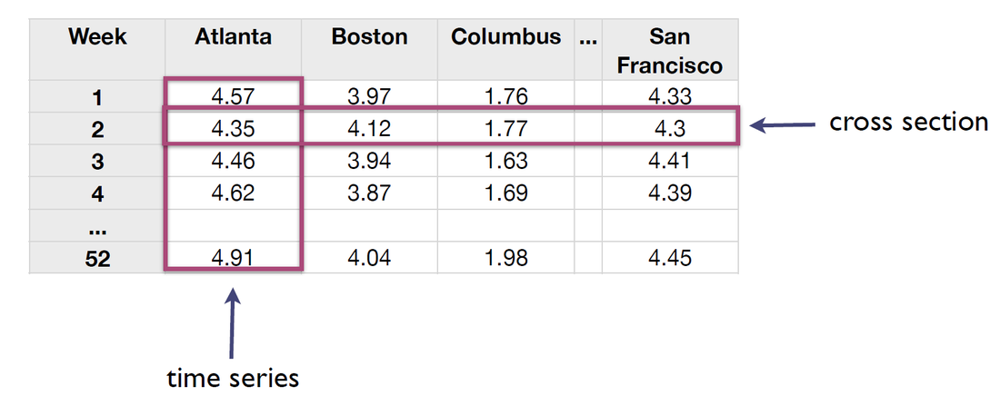
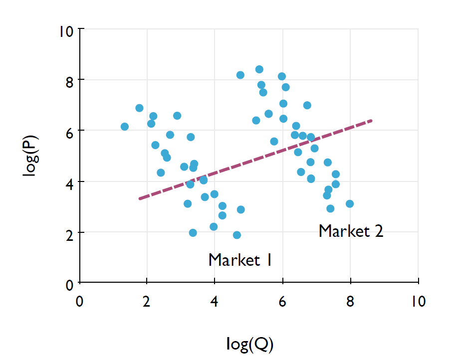
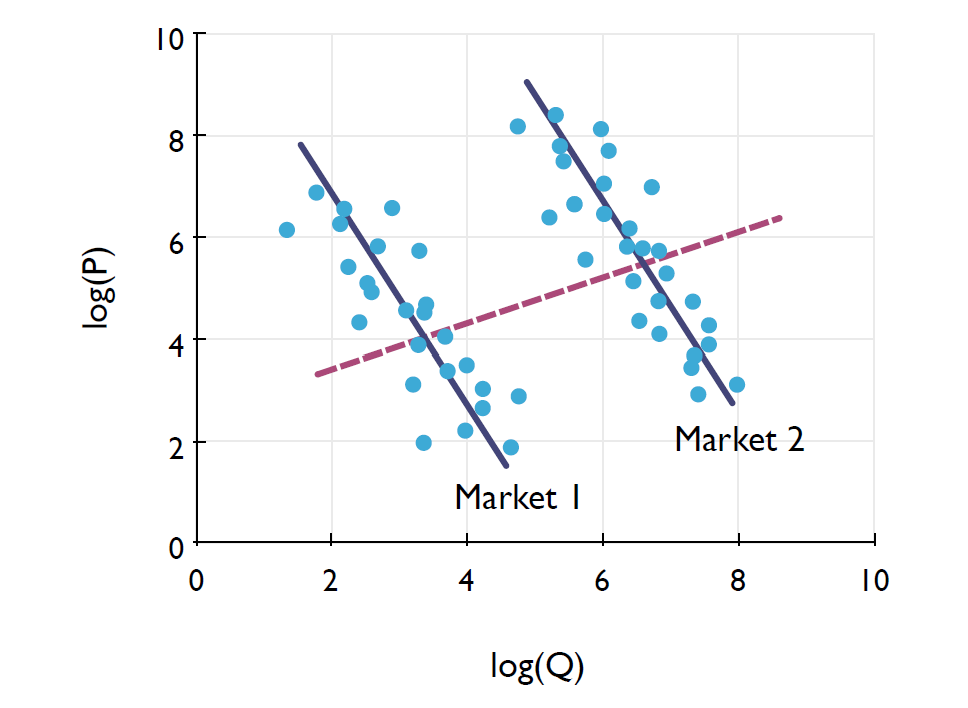
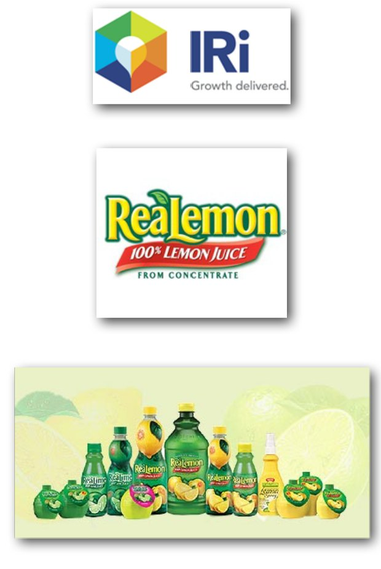
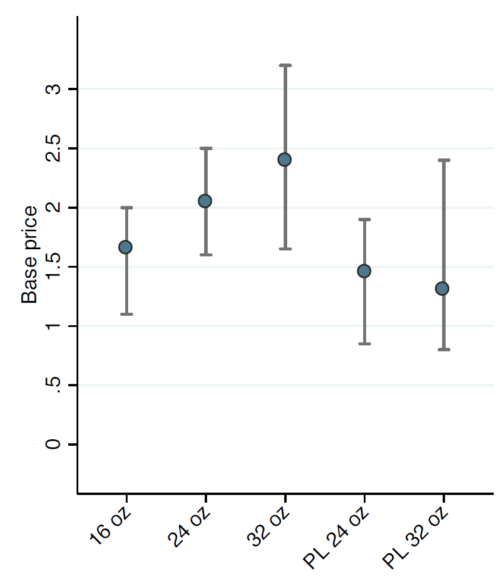
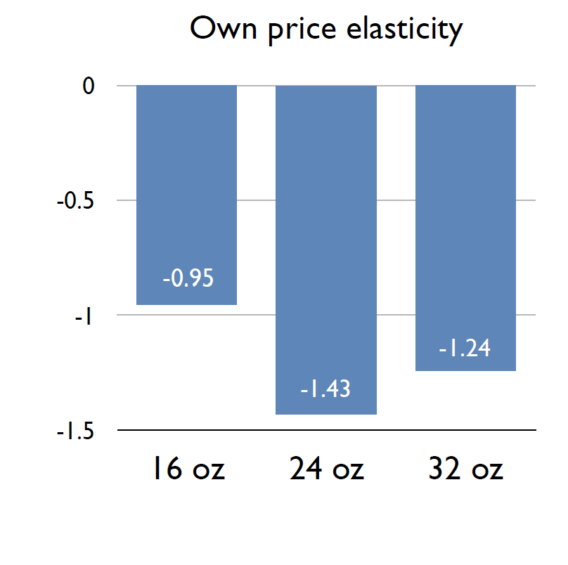
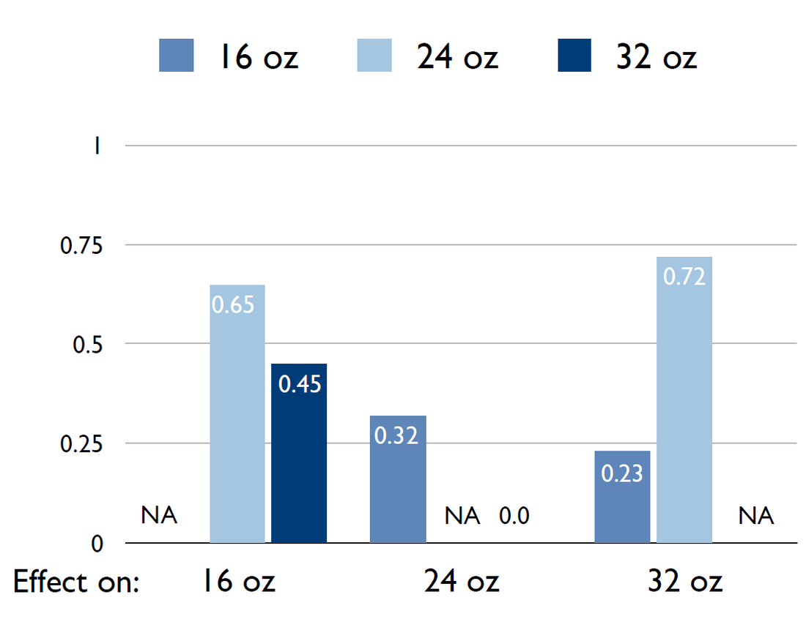
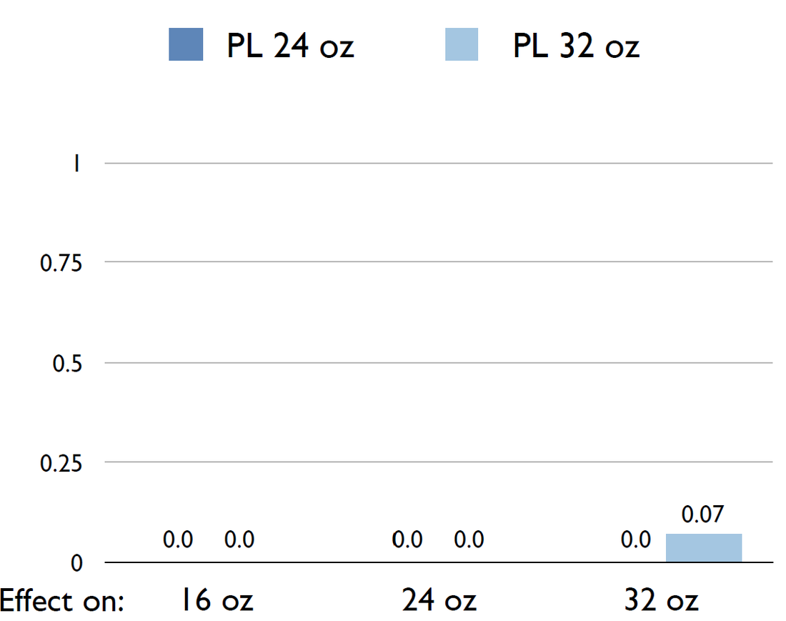
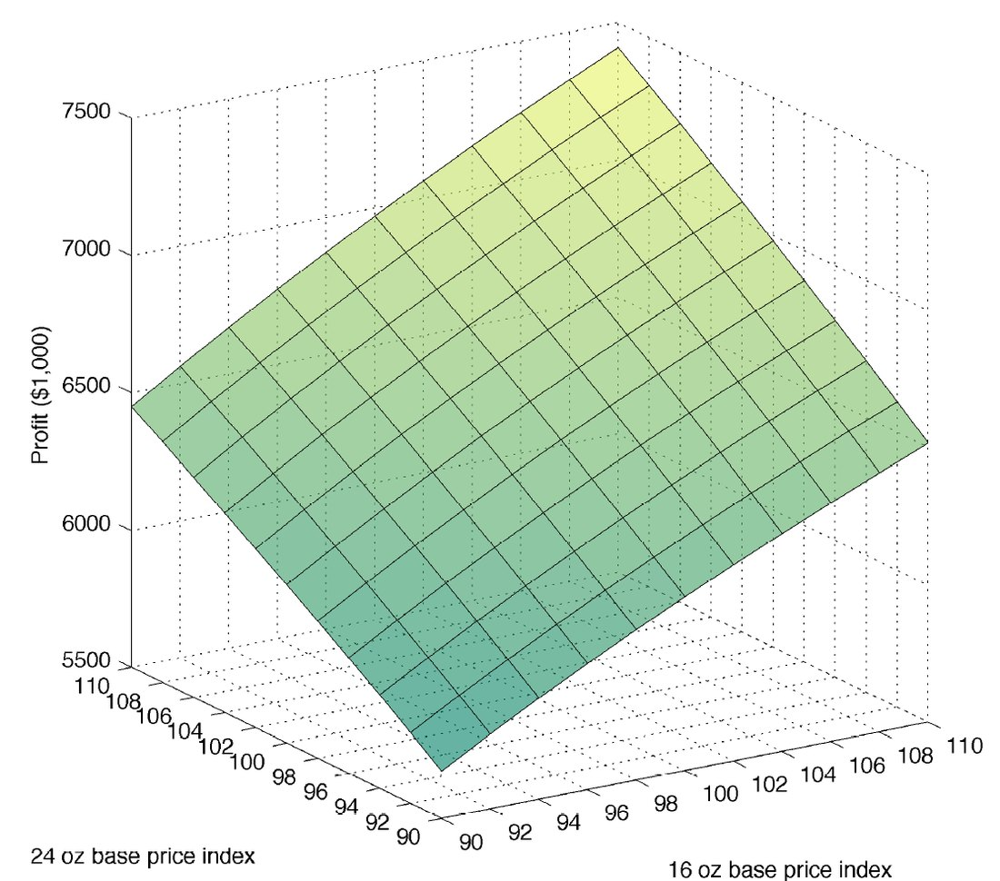

Review last session
We discussed the following topics in the last session
- Demand models: response to change in price
- Price elasticity
- Linear models and log-linear models (multiplicative)
- Demand models for single and multiple products
- Profitability analysis
- General multi-product case
- Single product
- Promotions and optimal pricing
- In-class analysis
- Demand response and profitability analysis for a single product manufacturer
Today’s agenda
I · Regression for demand
Deeper on the regression model used to estimate multiplicative demand models
II · Retail demand data
Scanner data · time series, cross-section and panel data
III · More on regression
Unbiased estimators · omitted variable bias
IV · In-class consulting
Casino pricing — slot machine demand analysis
V · Base pricing analysis
Case study using IRI data
VI · Assignment 3
Base pricing analysis for the detergent category
Estimating price elasticity for a single product using data
- General approach for a single product case:
- Obtain data on sales units and prices
- Estimate this regression equation to obtain model parameters
- Assume constant price elasticity
- What is the elasticity in this model?
- What is the error term? Why do we need that?
Obtaining price elasticity from data: an example
- Example: Demand for Philadelphia Cream Cheese, 8 oz

Each point is a store-week: \(\log(Q)\) on the horizontal axis, \(\log(P)\) on the vertical axis.
Estimating the log-linear (multiplicative) demand model
- Two product example
- In the case of two products we have two regression equations, one for each product
- \(\log(Q_i)\) is the dependent variable, \(y_i\)
- \(\log(P_1)\) and \(\log(P_2)\) are the independent variables, \(x_1\) and \(x_2\)
- Why do we have two different error terms?
- Do \(\beta_{12}\) and \(\beta_{21}\) have the same values?
Taking the regressions to data
- While running these regressions is simple in principle, in practice:
- We need a good understanding of the sources of variation in data
- Why there are price and demand variations
- Control for other sources of endogeneity that can bias the estimates of price elasticities:
- Variables that are potentially correlated with prices and demand
- What is endogeneity? What is omitted variable bias in a regression?
- We need a good understanding of the sources of variation in data
Scanner data
- Timeline
- First scan test at Kroger in Cincinnati in 1972
- IRI’s InfoScan introduced in 1987
- What do scanner data capture?
- Sales at the UPC (universal product code) level
- Honey Nut Cheerios 25 oz size
- Prices and promotions
- Sales at the UPC (universal product code) level
- Aggregation levels
- Market (Raleigh-Durham) · chain/account (Kroger) · store
- Time
- Weekly, monthly, …
The two dimensions of scanner data
- Time series data of sales, prices, etc. in a store, chain (account), or market
- Time series data: data of a series of time in one store
- Prices, sales, etc. in a cross-section of stores, chains (accounts), or markets
- Cross-sectional data: one time period at different units/stores
- Data with a cross-sectional dimension and a time series dimension are called panel data

Time series vs. cross-sectional data
- If you could either use time series data or cross-sectional data for your demand analysis but not both, which would you prefer?
- Example: You try to estimate the own-price elasticity of demand from either
- 52 weeks of price and sales data in one store
- Price and sales data for 52 different stores in one week
Let us discuss each.
Panel data
- Panel data has both cross-sectional and time-series variation
- Panel data are an ideal data source for data-driven marketing
- Example: Estimating price elasticities in and across markets
- Time series variation in prices and sales within markets (the cross-sectional units) allows us to estimate price elasticities controlling for the market environment (consumer tastes, competition, etc.)
- Variation across markets in prices and sales allows us to examine how environmental factors, such as demographic differences across markets, are related to differences in price elasticities across markets
An example: Franprix
- You are an analyst at Franprix, a French retailer
- You run a regression on panel data of vegetable prices and quantities across stores and weeks
- The estimated price elasticity is positive
- When prices are high, demand is high
- When prices are low, demand is low
- Should Franprix raise vegetable prices to sell more?
What do you think is the issue?
Theoretical assumptions of regression
- Regression analysis is based on some assumptions that might be violated
- There are two common scenarios that can violate our assumptions:
- Reverse causality: the demand sets the price, not the opposite!
- Example: Franprix marking up prices when demand is strong
- Omitted variable bias: happens when we leave out an important factor that affects both our independent variable (e.g., price) and our dependent variable (e.g., sales)
- Example: seasonality, weather, or promotions for vegetables
- Reverse causality: the demand sets the price, not the opposite!
- These data patterns will bias our estimated \(\eta\)
- Increasing the number of data points would not solve this issue
- We need to control for all the variables we have access to
A famous question: the return to education
- One of the most famous questions in economics:
- What is the causal effect of an extra year of schooling on wages?
- A simple regression looks like
- A naïve OLS estimate of \(\beta\) is typically around 0.08–0.10
- About an 8–10% higher wage per extra year of schooling (Card, 1999)
- But is that the true causal return to education?
Discuss: what might bias this estimate?
Another example
- We estimate demand for a product. The competitor’s price, \(P_2\), frequently moves in the same direction as the product price, \(P_1\)
- Do we obtain unbiased estimates (own and cross-price elasticities) when we estimate
- Do we obtain an unbiased own-price elasticity when we omit the competitor’s price from the regression?
A numerical simulation example
- Simulate data from the regression
- Four simulation scenarios
- We randomly generate independent variables \(x_1\) and \(x_2\) that are either correlated or uncorrelated
- Then we run the regression and either include \(x_2\) or remove it from the regression
- In total, four different scenarios
- In all scenarios our goal is to estimate the coefficient of \(x_1\) (equal to −2)
- Plot histogram of regression coefficients across 1,000 simulated data sets
- If the estimator of the regression coefficient is unbiased, the average of the estimates across all data sets (pink vertical line on the next slide) should be almost identical to the true coefficient
Run the simulation
Simulation results
Pink line = average estimate across 1,000 data sets · dashed line = true coefficient (−2). The left column keeps \(x_1\) and \(x_2\) uncorrelated.
Unbiased and biased estimates
- Remember a key assumption in regression analysis:
- All independent variables are uncorrelated with the error terms: \(cov(x_k, \epsilon) = 0\)
- If satisfied, the OLS estimator is unbiased
- In the previous example the competitor’s price is correlated with the own price
- Intuition and the simulations reveal a systematically biased own-price elasticity estimator
- Why? — Because the own price is correlated with the error term, if the competitor’s price is omitted
- Original equation: \(y = 0 - 2x_1 + 1x_2 + \epsilon\)
- Omitted regression: \(y = 0 + \beta x_1 + \tilde{\epsilon}\)
- Thus, we have: \(\tilde{\epsilon} = 1x_2 + \epsilon\)
- If \(x_1\) and \(x_2\) are correlated, \(x_1\) and \(\tilde{\epsilon}\) are correlated
Omitted variable bias
- Omitted variable bias occurs if both of these conditions are met:
- A relevant independent variable that affects the outcome is omitted from the estimated regression model
- The omitted variable is correlated with an included variable
- Omitted variable bias presents one of the most severe pitfalls in the application of statistics to real-world problems
- Return on education example
- Generally, no test for omitted variable bias exists unless we have data on the omitted variables
- Include all potentially related variables in the regression analysis
Omitted variable bias in cross-sectional data
- Example: Goal is to estimate a demand model using data on sales and prices from stores in different geographies or markets
- Using data from different markets can be useful
- Price variation across markets may be higher than within markets → more variation, better estimation
- But markets often differ across other dimensions:
- Consumer tastes, demographics, competition, distribution
Problem: prices might systematically differ across markets according to differences in consumer tastes, demographics, etc.
Another example
- Assume we have price, quantity sold from 2 different locations
- The level of demand is higher in market 2 than in market 1, and accordingly the product tends to be sold at higher prices in market 2 than in market 1
- The price elasticity, however, is identical across markets
- What happens if we run a regression in this setting?
- What do we get as the price elasticity?

Potential solutions
- Suggest a simple solution to solve this issue
- Run a separate regression, one for each store
- Pros
- Solves the issue of omitted variable bias
- Cons
- What if we have 10,000 stores? We cannot run this many regressions
Solution
- Control for systematic differences in demand across markets using dummy variables for each market (apart from market 1, chosen as the base category)
- The dummies allow for different intercepts (positions of the demand curves) across markets
- The dummy variables for each cross-sectional unit (markets) are called fixed effects

Omitted variables: Lessons
- To be able to estimate unbiased price elasticities, the variation in prices in the data should not be driven by variation in demand conditions that cannot be controlled for
- Special care should be taken if the demand estimation is performed using cross-sectional data
- Omitted variable bias can be avoided by running experiments
- Experiments are the gold standard for causal measurement
- More on experiments later in this course
- But experiments may be harder to run on price (compared to say advertising)
Why study online behavior?
- User online behavior is — and will be even more — an important topic
- Are there distinct ways people spend their attention online, and do these groups differ in well-being?
- “Focused deep readers,” “fragmented switchers,” “night-time scrollers,” and “utilitarian users”
- Does scrolling cause bad moods, or do bad moods cause scrolling?
- Which sites have their hooks on us? Predict whether a user returns to a site within 2 hours of leaving it — a measure of habit strength
- Are there distinct ways people spend their attention online, and do these groups differ in well-being?
- A great practice for the future — and a fun exercise to know ourselves ✨🔍🧠
How it is done
- You install the extension on your computer
- Browse the internet as you do regularly
- After 1 month, we explore the data gathered for the assignment
Then
- We will answer cool, interesting questions about ourselves
- We can also bet on whether you can guess something about yourselves
- Am I among the top-half browsers?
- Do I spend more time than average on YouTube?
- Do I go to social media when I do not feel good?
Notes on privacy
- The platform is private and anonymous
- It does not save any personal information
- We even delete your email after sign-up
- Only you know which data is yours
- You can always disable data gathering
- You can also delete any data you do not want to share
We need enough people
- We can only do this if enough of you agree to participate
- You need to share your anonymous data
- You need to have (and use) a Chrome browser
Quick poll next: Chrome use · willingness to share data · rewarding contributors with coins
In-class poll
Scan the QR code, answer three short Yes/No questions, then come back to the slides
Slot management for a casino chain
- Goal: to improve or maximize the profitability of slot machines in a casino
- Situation: a large casino chain wants to use a data-driven analytics approach to pricing
- Historically, pricing has been ad-hoc (decided by local managers)
- What is your role as the consultant?
- Perform demand and pricing analysis to advise the casino chain on improving profits through a better pricing strategy
- What data do you have?
- Slot machine usage/demand for over two thousand slot machines from a casino chain from Feb 2007 to May 2008 (16 months)
casino.csvCase explanation in
casino.pdf
Base pricing analysis
- Base price = non-promoted price (“everyday” shelf price)
- Purpose of base pricing analysis
- Understand competitive influence of prices on sales
- Adjust / fine-tune base prices
Case study: Data-driven base pricing
- A CPG (consumer packaged goods) manufacturer approaches IRI
- Company sells a national brand
- Product line: 16 oz, 24 oz, and 32 oz bottle size (32 oz size has recently been added)
- Key problems faced by the brand manager
- Price the different sizes separately or engage in product line pricing?
- Is there cannibalization across product sizes (worry about new 32 oz size)?
- Worry about private label (PL) competition — is it possible to assess the extent of the competitive threat?
- Are the current base price points optimal, or should we change our prices?

Base pricing approach
Data source
- IRI’s InfoScan database
- About 1,000 stores across the U.S. used in this study
- 52 weeks
- Prices and sales units of the three branded bottle sizes and the main private label products
- Focus on base prices and base unit sales
- Collected in weeks without promotional activity
- Promotions (details later): temporary price reductions (TPR’s), display, featured product
- ACV: all commodity volume
- Defined as the store revenue from all products sold in $ million (per annum)
- Includes sales in all categories and departments (produce, milk, health and beauty, etc.), not just the products in the demand model
- Proxy for store size
Data inspection: Variation in base prices
- Graph shows:
- Average base price across all store-weeks
- 95% range of base prices
- Why is it important to have price variation?
There is substantial price variation to work with — a precondition for estimating demand.

Results of base pricing analysis: Elasticities
- How responsive is sales volume to own price changes?
- Own price elasticities
- Note
- Here, IRI does not report standard errors of estimates
- Always question marketing consultants about statistical precision of results
- Why is it important to have standard deviation?

Results of base pricing analysis: Elasticities (2)
- How responsive is the sale of a product to the prices of other products in the same brand?
- Is there any evidence of cannibalization?
- Consequences?

Results of base pricing analysis: Elasticities (3)
- How responsive is the sale of a product to the prices of PL products?
- How severe is the competitive effect?

Base price simulations
- Goal: predict profit for each package size, \(k\), in the product line
- \(P\) is retail price, \(C\) is variable cost, and \(r\) is retail margin
- Total profit from product line (if we drop the 32 oz pack size)
- What do we need to conduct base price simulations:
- Data: current base prices across all markets · retailer margin · variable cost (per unit or case)
- Prediction of unit sales conditional on own and private label prices — log-linear demand model
Profits for different 16 oz and 24 oz price combinations
- Profits highest if both prices are increased by 10%
- Based on competition and cannibalization analysis, why is this happening?
- Why not increase prices even further?
- Statistical reliability of the model decreases when proposed prices are very different from prices in the data

Base pricing: Lessons
- Goals of a base pricing analysis
- Understand how the prices of the products in the category influence demand for the products that we sell
- Do the prices of competing products influence our own sales — competition?
- Do the prices of other products in our product line influence our own sales — cannibalization?
- Data-driven approach to base pricing
- Use data on past prices and sales
- Use regression analysis to estimate a demand model
- Use base pricing analysis to predict product line profits
- Can we improve pricing?
- How should we adjust the prices in our product line?
Assignment 3
- Goal:
- Conduct base pricing analysis for P&G’s Tide laundry detergent brand
- Examine cannibalization within the Tide product line
- Examine competitive threat from Wisk
- Make pricing recommendations
- Approach
- Estimate log-linear demand model using scanner data
- Use profitability analysis to make recommendations on price change
- Combine techniques learnt in the price analytics module:
- Casino pricing · IRI case study · profitability and demand exercise
Summary
- Regression models are used to estimate multiplicative demand models
- Using panel data with both cross-sectional and time series variation can help
- Need to control for all factors that can bias price elasticity estimates
- Omitted variable bias
- Sources of bias and solutions
- In-class consulting work on casino pricing
- Data driven pricing analysis
- Showcases the breadth of the applicability of data driven demand models
- Base pricing analysis — understand how the prices of the products in the category influence demand for the products that we sell
- Quantify competition and cannibalization
- Use regression estimates and profitability analysis to manage product lines in competitive markets
- Case study using IRI data